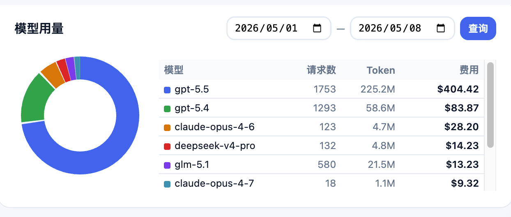
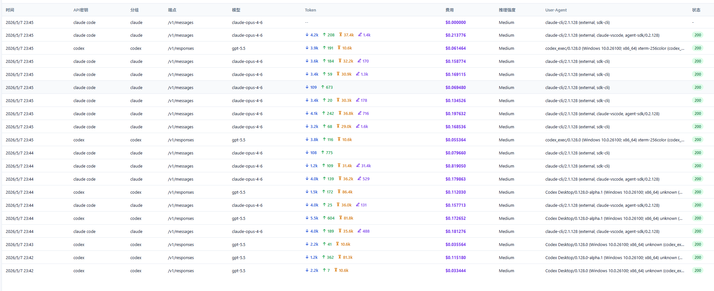
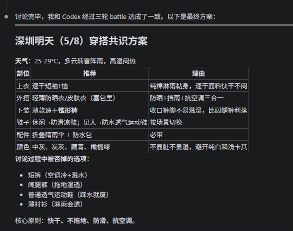

这不是工具说明书，也不是模型横评。更像一次阶段性复盘：我最近怎么用 Codex、Claude Code、Skills、MCP、qclaw、WorkBuddy 去做事、踩坑、协作和收口。
我更关心的不是谁最聪明，而是谁更适合放在工作流的哪个位置。
这套分享会讲真实成本、桥接体验、协作分工和我目前的判断。
不是先装满生态，而是先知道什么问题该交给什么能力去补。
有些地方我已经很确定，有些地方我还在试，但都值得拿出来讲真话。
这页我想先把背景说清楚：这套分享不是事后总结出来的漂亮框架，而是我最近 48 小时边折腾边形成的真实经验。
如果只记工具名，最后很容易变成一页生态地图。但我最近最有启发的，其实是慢慢看清楚谁该先上、谁该补位、谁该做最后验收。
我现在最认可 Codex 的位置，不是"比谁更会解释"，而是它更像能进项目现场帮我做事的执行位。
如果要我用一句话形容它现在在我工作流里的位置，我会说：它更像一个很会帮我拆题、对照、互评的搭子，但成本感要一直带着。
下一页我直接放真实截图，因为这件事靠口头讲不够有冲击力。
这张图我一定会留着，因为它逼着我从“这个工具好不好用”继续往下想，去看“这套工作流能不能长期跑”。

过去一段时间的模型调用与费用分布。这个图不是为了吓人，而是提醒我：方法不稳，token 会先告诉你。
qclaw / OpenClaw 和 WorkBuddy 我还没有大规模带进长期真实项目，但我至少已经验证了一条可用的桥接路径：共享目录 + 定时轮询。这一页我只讲我已经确认过的东西。

这一类结果对我最重要的价值，不是炫技，而是证明：在没有暴露本地 API 的前提下，也能先把交接链路跑起来。
这个结论我想明确讲出来：如果多一个 agent 只是多一层意见、多一轮建议、多一个分叉，那它不但不会更稳，反而会增加返工。这次做 PPT 的过程，我就明显感受到了这件事。

battle 本身并不等于高质量。真正有价值的是：它有没有明确承担批判、对照、校验的职责。